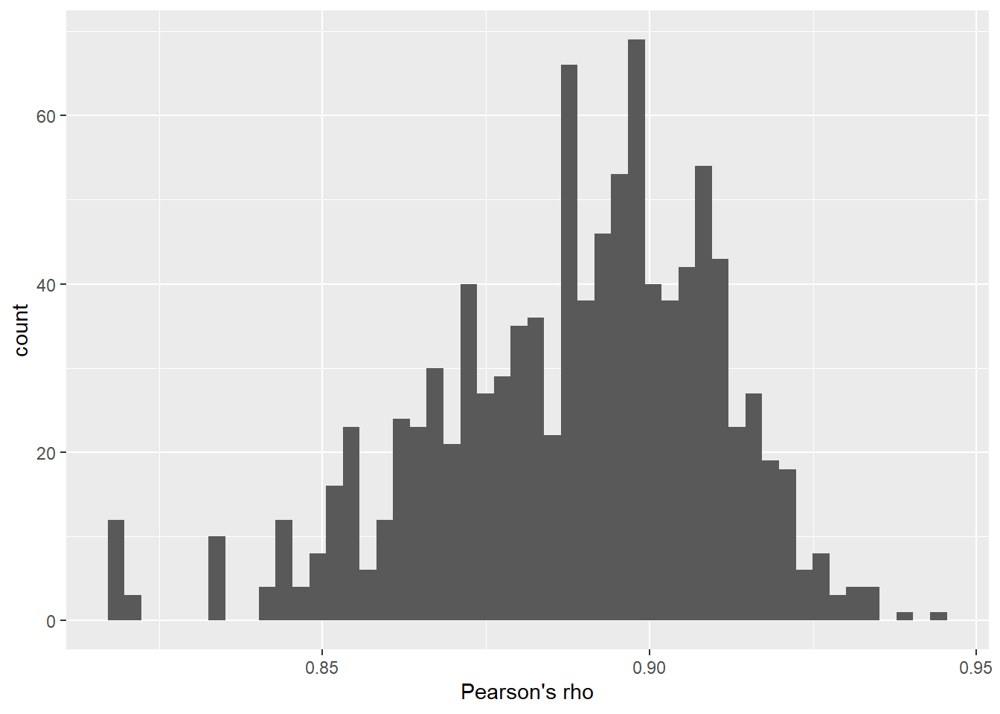
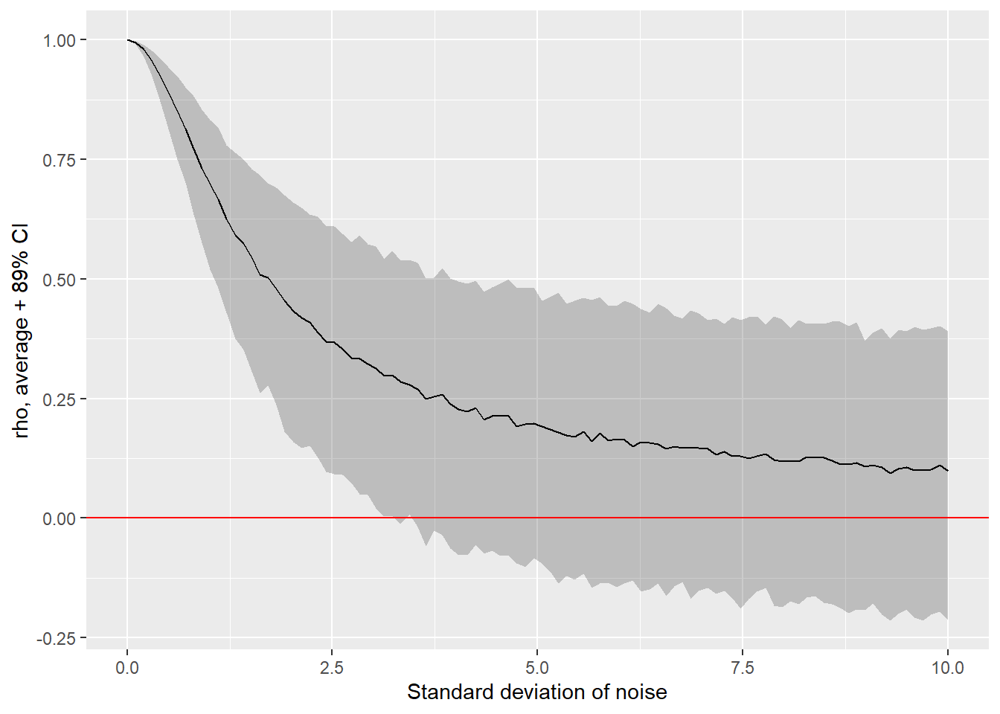
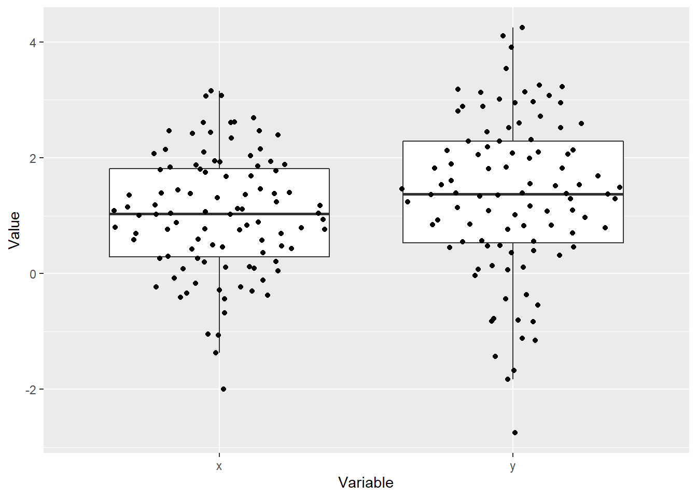
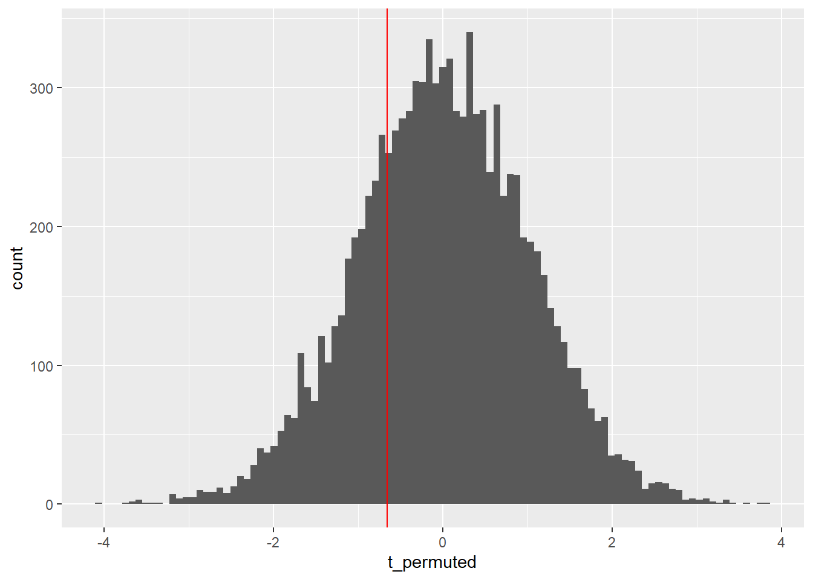
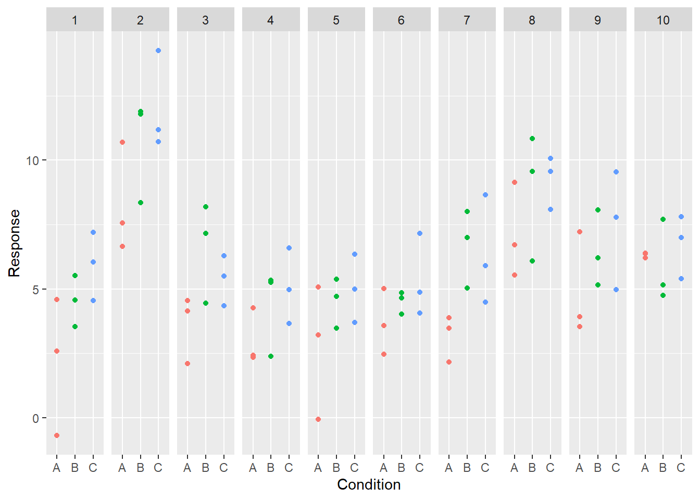
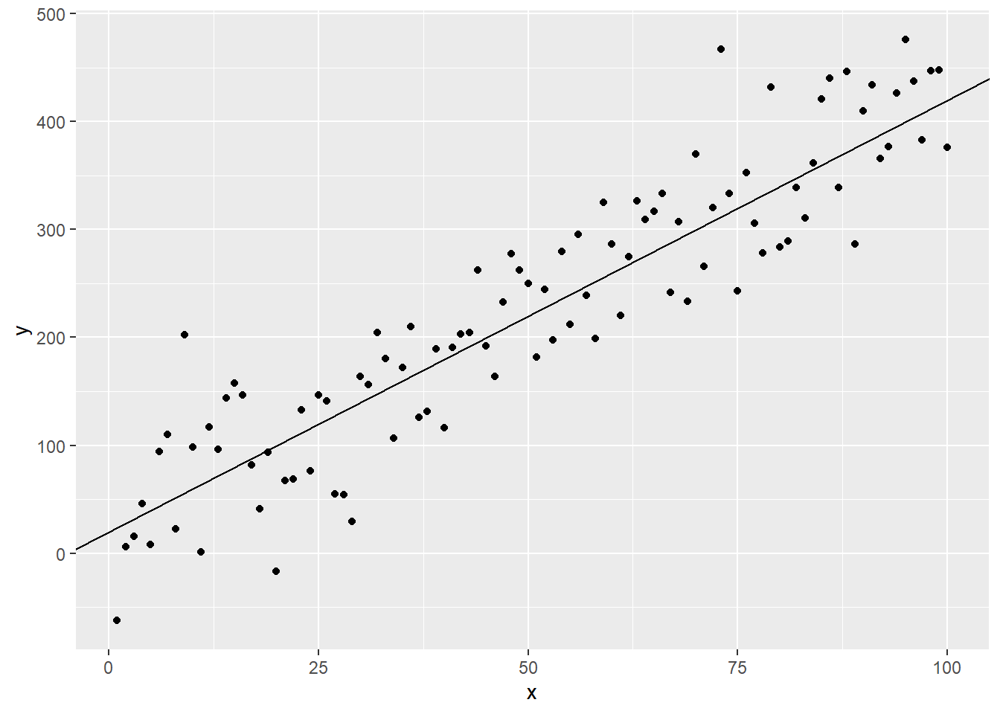
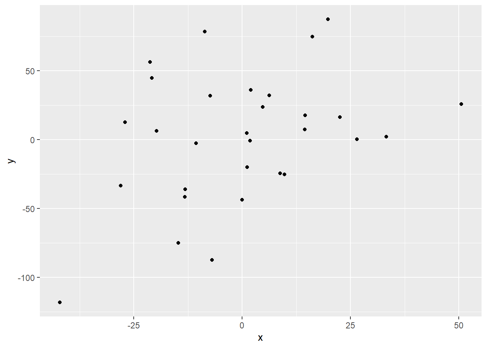

Seminar 14 Statistical modeling
I suspect that this is a seminar that you were waiting for the most as it finally tells you how to call statistical functions in R. However, from my perspective, it is the least useful seminar in the entire course because if you know statistics and you know which specific tool you need, figuring out how to use it in R is fairly trivial. Conversely, if your knowledge of statistics is approximate, knowing how to call functions will do you little good. The catch about statistical models is that they are very easy to run (even if you implement them by hand from scratch) but they are easy to misuse and very hard to interpret64.
To make things worse, computers and algorithms do not care. In absolute majority of cases, statistical models will happily accept any input you provide, even if it is completely unsuitable, and spit out numbers. Unfortunately, it is on you, not on the computer, to know what you are doing and whether results even make sense. The only solution to this problem: do not spare any effort to learn statistics. Having a solid understanding of a basic regression analysis will help you in figuring out which statistical tools are applicable and, even more importantly, which will definitely misguide you. This is why I will give an general overview with some examples simulations but I will not explain here when and why you should use a particular tool or how to interpret the outputs. Want to know more? Attend my Bayesian Statistics seminar or read an excellent Statistical Rethinking by Richard McElreath that the seminar is based on.
Below, we will go through a number statistical analysis approaches and, for some, you will learn how to use resampling and permutation to obtain confidence intervals and p values, replicating the ones that parametric models produce. Hopefully, this should give you an intuition about where these values come from (the ones you see in the output are analytically derived solutions for when you would perform resampling and permutation for infinitely many iterations but the core idea is the same) and how you can compute them for simulations, power analysis, or when analytic estimates are not readily available. Grab the notebook.
14.1 Correlation
In base R, you can use function cor() to compute correlation. You have a choice of method, either "pearson" (default, Pearson’s product moment correlation coefficient, \(\rho\)), or rank-based "kendall" (Kendall’s rank correlation coefficient, \(\tau\)) or "spearman" (Spearman’s rank correlation coefficient, \(\rho\)).
df <-
tibble(x = rnorm(100)) %>%
mutate(y = rnorm(n(), x, 0.5))
cor(df$x, df$y, method="pearson")## [1] 0.9019981Alternatively, you can use cor.test() that also computes test statistics and significance.
cor_result <- cor.test(df$x, df$y, method="pearson")
cor_result##
## Pearson's product-moment correlation
##
## data: df$x and df$y
## t = 20.682, df = 98, p-value < 2.2e-16
## alternative hypothesis: true correlation is not equal to 0
## 95 percent confidence interval:
## 0.8575026 0.9331000
## sample estimates:
## cor
## 0.9019981cor.test returns a list, so you can access its individual elements65 via a double-bracket or $ notation.
cor_result$p.value## [1] 1.587873e-37Bayesian correlation with a full posterior distribution for the correlation coefficient and Bayes Factor as a measure of significance, can be computed via correlationBF() function, which is part of BayesFactor package.
library(BayesFactor)
correlationBF(df$x, df$y)## Bayes factor analysis
## --------------
## [1] Alt., r=0.333 : 1.018692e+33 ±0%
##
## Against denominator:
## Null, rho = 0
## ---
## Bayes factor type: BFcorrelation, Jeffreys-beta*cor_bf <- correlationBF(df$x, df$y, posterior = TRUE, iterations=1000)
ggplot(data=NULL, aes(x=c(cor_bf[, "rho"]))) +
geom_histogram(bins=50, ) +
xlab("Pearson's rho")
14.2 Correlation in practice
Let us practice computing and understanding the correlation using randomly generating data. First, let us compute Pearson’s correlation coefficient by hand. The formula is
\[
r_{xy} = \frac{\sum_{i=1}^{n}(x_i-\hat{x})(y_i-\hat{y})}{\sqrt{\sum_{i=1}^{n}(x_i-\hat{x})^2}\sqrt{\sum_{i=1}^{n}(y_i-\hat{y})^2}}
\]
where \(\hat{x}\) and \(\hat{y}\) are sample means for the corresponding variable. Thanks to vectorized nature of R, you do not need to use loops! Generate random data from normal distribution the way I did above. Generate variable x from standard normal distribution (rnorm(), \(\mu=0\), \(\sigma=1\)), generate a second variable from a normal distribution with \(\mu\) defined by x and use a value of your choice for \(\sigma\). Compare your results with those of cor() function.
## cor(x, y) = 0.878730431189062, rxy = 0.878730431189062Do exercise 1.
When interpreting correlation between two variables, your are interested not only in the estimate itself but also about your confidence about it. The cor.test() function helps you in this by returning a 95% confidence interval. Let us replicate this via resampling approach you have learned about the last time. Recall the idea is to draw more samples from the distribution but, since we do cannot do this, we resample the data we have with replacement by assuming that our original sample is representative. Generate x and y as in exercise 1 and compute a percentile 95% confidence interval. For this, you will need to sample pairs of values with replacement. In other words, you need to sample index of elements. You can do it yourself or rely on boot()). Once you computed correlation coefficients for 1000 samples drawn from original variables, compute and compare the 95% confidence interval with one reported by cor.test().
## 95% CI via resampling: 0.974918..0.988283##
## Pearson's product-moment correlation
##
## data: x and y
## t = 52.538, df = 98, p-value < 2.2e-16
## alternative hypothesis: true correlation is not equal to 0
## 95 percent confidence interval:
## 0.9743617 0.9883520
## sample estimates:
## cor
## 0.9827071Do exercise 2.
Next, let us see how noise in y (second variable) affect it strength. The approach will be very similar to how we explored with dependence between number of samples and our (un)certainty about the mean in the previous seminar. Write a function that will take two parameters: 1) number of samples and 2) standard deviation of noise. Generate variable x and y the same way as in exercise 1 but use the function parameter for \(\sigma\) when generating y. Return the correlation coefficient. Next, create a tibble with various levels of standard deviation of noise with 1000 iterations (rows) per level. Compute correlation coefficient for every row (I have used Nsamples = 30) and then mean and 89%66 confidence interval for each level of noise. Plot it, so it looks similar to the plot below.

Do exercise 3.
The analysis above explored how increased noise masks correlation between two samples of a fixed size. However, when you design a study you are more likely to be interested in an opposite question: what is your confidence about a fixed strength correlation (you figure out its value from the literature) given an increasing number of samples. This is the same logic that we applied to our confidence about mean. I have used \(\sigma_{noise} = 5.0\) for the plot below.
Do exercise 4.
14.3 Pairwise comparisons
For pairwise comparisons for normally distributed data, you can use Student’s t-Test via t.test(). Here, I generate to x as a normally distributed normal variable and y, as a normally distributed variable random whose mean is x + 0.3. I am using library ggbeeswarm to generate the nicely looking cloud of dots.
set.seed(14454)
df <-
tibble(x = rnorm(100, mean = 1, sd = 1)) %>%
mutate(y = rnorm(100, mean = x + 0.3, sd = 1))
You can perform t-test assuming that samples in two variables are independent
t.test(df$x, df$y, paired = FALSE)##
## Welch Two Sample t-test
##
## data: df$x and df$y
## t = -1.8603, df = 184.37, p-value = 0.06443
## alternative hypothesis: true difference in means is not equal to 0
## 95 percent confidence interval:
## -0.65829852 0.01933491
## sample estimates:
## mean of x mean of y
## 1.018298 1.337780Or, that they are paired (this matches how I generated the data), i.e., repeated-measures design (note the change in estimates, statistics, and significance).
t.test(df$x, df$y, paired = TRUE)##
## Paired t-test
##
## data: df$x and df$y
## t = -3.3432, df = 99, p-value = 0.00117
## alternative hypothesis: true difference in means is not equal to 0
## 95 percent confidence interval:
## -0.5090948 -0.1298688
## sample estimates:
## mean of the differences
## -0.3194818A Bayesian version is provided via ttestBF() function, which is part of the BayesFactor package.
library(BayesFactor)
ttestBF(x = df$x, y=df$y, paired=TRUE)## Bayes factor analysis
## --------------
## [1] Alt., r=0.707 : 19.27724 ±0%
##
## Against denominator:
## Null, mu = 0
## ---
## Bayes factor type: BFoneSample, JZSFor a non-parametric pairwise test, you can use Wilcoxon Rank Sum and Signed Rank Tests wilcox.test(). Package coin implements many tests, including permutation tests, such as Two- and K-sample Fisher-Pitman permutation test via oneway_test() that tests for the equality of the distributions in independent groups, see vignette for details.
14.4 T-tests in practice
As with the correlation coefficient, let us generate data and compute the t-statistics by hand. The formula is \[t = \frac{\bar{X} - \mu_0}{s_D / \sqrt{n}}\]
where \(\bar{X}\) and \(s_D\) are the average and standard deviation of difference between all pairs, \(n\) is the number of pairs, and \(\mu_0\) is the null hypothesis for difference. In our case, we would like to know whether the difference is different from zero, thus, \(\mu_0 = 0\).
Generate random data similarly to how I did it in the example above. Compute t-statistic and compare it to the output of a paired t.test().
## t-statistic: -2.35394746408782##
## Paired t-test
##
## data: x and y
## t = -2.3539, df = 99, p-value = 0.02055
## alternative hypothesis: true difference in means is not equal to 0
## 95 percent confidence interval:
## -0.42255491 -0.03601326
## sample estimates:
## mean of the differences
## -0.2292841Do exercise 5.
Let us use resampling approach to replicate analytically derived confidence interval of difference between the means and the p-value. We start with the 95% confidence interval for the difference. The idea is the same as before when we computed the confidence interval for correlation: We sample both variables pairwise, compute the average difference, store it, repeat this 1000 times. Once we have 1000 resampled average distances, compute a percentile interval and compare it to one reported by t.test().
## resampled 95% percentile confidence interval: -0.525506556471162..-0.124136641013539##
## Paired t-test
##
## data: x and y
## t = -3.0788, df = 99, p-value = 0.00269
## alternative hypothesis: true difference in means is not equal to 0
## 95 percent confidence interval:
## -0.5329613 -0.1152214
## sample estimates:
## mean of the differences
## -0.3240913Do exercise 6.
Next comes the statistical significance testing via a permutation test. Here, we compute the t-statistic for the sample (you already know how to do that). Then, we pool values from both x and y into a single vector, shuffle that single vector and divide it back into permuted x (first half of the pooled vector) and permuted y (second half of the pooled vector). Then we compute the t-statistics for the difference between permuted vectors. We repeat this 10000 times to obtain a distribution of t-statistics that we would observe when pairing between x and y was random. Finally, we compute the proportion of values that are more extreme (smaller than, in our case) than the original value. This, effectively, is the probably of observing such extreme t-statistic by pure chance and is interpreted the same way as the p-value. Compare this to the output of the paired t-test using alternative = "less":

## Proportion of t-statisic for permuted pairs < t-stat for original: 0.2573##
## Paired t-test
##
## data: x and y
## t = -0.65575, df = 99, p-value = 0.2568
## alternative hypothesis: true difference in means is less than 0
## 95 percent confidence interval:
## -Inf 0.100426
## sample estimates:
## mean of the differences
## -0.06555021Do exercise 7.
14.5 Formula notation
Using statistical models in R is particularly easy because most packages make use of a formula to describe a model. Different functions and packages interpret the formula mostly the same way with differences arising due to how random effects or additional parameters are described. Here is an example of a formula:
y ~ 1 + x1 + x2 + x1:x2It says that the outcome variable y should be a modeled as a linear combination of an intercept 1 (can be omitted in a formula), predictor variables x1 and x2, plus their interaction x1:x2. This also assumes that all these variables are in a single table that you also supply to the function (that parameter is typically called data). Same formula can be shortened by using * which means “both predictors and their interaction” and omitting redundant intercept (it is always used unless you explicitly exclude it)
y ~ x1*x2You can also exclude specific terms via -. So, if you insist that the intercept must go through 0, you write “exclude intercept term” as -1
y ~ x1*x2 - 1Or you can exclude a specific term or an interaction. The two formulas below are equivalent with a main effect for x2 and an interaction term but no main effect for x1. However, I would generally discourage you from using - as the first formula is much harder to understand (or, conversely, much easier to misunderstand).
y ~ x1*x2 - x1
y ~ x2 + x1:x214.6 Using t-test via formula
When we used t.test() above, we specified two vectors. However, you can also use a table where one column contains values and another one group labels. Here, we estimate difference in mean x between two groups.
yA <- rnorm(100, mean = 1, sd = 1)
yB <- rnorm(100, mean = yA + 0.1, sd = 1)
df_group <-
tibble(y = c(yA, yB),
group = factor(c(rep("A", 100), rep("B", 100))))| y | group |
|---|---|
| 2.2309282 | A |
| 1.0449518 | A |
| 0.8420765 | A |
| 0.2378746 | A |
t.test(y ~ group, data=df_group, paired=TRUE)##
## Paired t-test
##
## data: y by group
## t = -0.32625, df = 99, p-value = 0.7449
## alternative hypothesis: true difference in means is not equal to 0
## 95 percent confidence interval:
## -0.2185310 0.1568153
## sample estimates:
## mean of the differences
## -0.0308578814.7 ANOVA
ANalysis Of VAriance is probably the most widely used analysis in social sciences. However, I would strongly suggest considering generalized linear mixed models instead. Unlike ANOVA they can work when residuals are not normally distributed (binomial, count, Likert-scale ordered categorical, proportions data, etc.), they can tolerate missing values, and they tend to overfit less (their results are likely to better generalize to future data) by assuming that individual participants are more average than they appear in the raw data (so-called shrinkage).
First, let us simulate data for ten participants and their responses, assuming that condition B increases their responses by 2 (arbitrary) units and C by 367.
set.seed(519264)
df_anova <-
# generate ten participants with five trials per condition
expand_grid(Participant = factor(1:10),
Condition = factor(c(rep("A", 3), rep("B", 3), rep("C", 3)))) %>%
# decide on a SINGLE baseline (intercept) for each participant
group_by(Participant) %>%
mutate(Intercept = rnorm(1, 5, 2.5)) %>%
# simulate normally distributed responses, assuming that are 3 units higher for condition "B"
ungroup() %>%
mutate(Response = rnorm(n(), Intercept + 2 * as.integer(Condition == "B") + 3 * as.integer(Condition == "C"), 1.5)) %>%
select(-Intercept)
The base R ANOVA function is called aov(), however, it does not support repeated measures. Instead, you can use function anova_test from package rstatix
For the repeated-measures ANOVA, we need to specify column with identity of participants via parameter wid
library(rstatix)
anova_test(data=df_anova, Response ~ Condition, wid=Participant)## ANOVA Table (type II tests)
##
## Effect DFn DFd F p p<.05 ges
## 1 Condition 2 87 7.418 0.001 * 0.146You can perform various pairwise post-hoc tests, e.g. Tukey
tukey_hsd(df_anova, Response ~ Condition)tukey_hsd(df_anova, Response ~ Condition) %>%
knitr::kable()| term | group1 | group2 | null.value | estimate | conf.low | conf.high | p.adj | p.adj.signif |
|---|---|---|---|---|---|---|---|---|
| Condition | A | B | 0 | 1.8015391 | 0.2763798 | 3.326698 | 0.01640 |
|
| Condition | A | C | 0 | 2.3560918 | 0.8309325 | 3.881251 | 0.00115 | ** |
| Condition | B | C | 0 | 0.5545527 | -0.9706066 | 2.079712 | 0.66200 | ns |
A Bayesian ANOVA with posterior distributions for individual coefficients and significance via Bayes Factor can be performed
via anovaBF function from BayesFactor package.
anovaBF(Response ~ Condition + Participant, whichRandom="Participant", data=data.frame(df_anova))## Bayes factor analysis
## --------------
## [1] Condition + Participant : 55450.04 ±0.85%
##
## Against denominator:
## Response ~ Participant
## ---
## Bayes factor type: BFlinearModel, JZSIf you decide for repeated-measure ANOVA, I would suggest using and reporting results for both frequentist and Bayesian ANOVA, as it will demonstrate that they do not depend on the choice of the statistical approach.
14.8 (Almost) everything is a linear regression model
Even though linear models did not appear as the first on the list, they are. All approaches that we covered so far, correlation, t-test, ANOVA, and many more (MANOVA, ANCOVA, etc.) a linear regression models. They may not look like linear regression models and even the formulas that we used, e.g., for t-test, do not look as if they have anything to do with linear regression, but they are. Here is a simple demonstration where I use the same code to generate data for running a t-test on a table. For a single two-level categorical variable, a t-test is equivalent to one-way ANOVA (note matching p-values).
yA <- rnorm(100, mean = 1, sd = 1)
yB <- rnorm(100, mean = yA + 0.1, sd = 1)
df_group <-
tibble(y = c(yA, yB),
group = factor(c(rep("A", 100), rep("B", 100))))
t.test(y ~ group, data = df_group)##
## Welch Two Sample t-test
##
## data: y by group
## t = 0.24858, df = 180.05, p-value = 0.804
## alternative hypothesis: true difference in means between group A and group B is not equal to 0
## 95 percent confidence interval:
## -0.2663616 0.3431457
## sample estimates:
## mean in group A mean in group B
## 0.9997196 0.9613275summary(aov(y ~ group, data = df_group))## Df Sum Sq Mean Sq F value Pr(>F)
## group 1 0.07 0.0737 0.062 0.804
## Residuals 198 236.15 1.1927However, we can ask R to show summary as if it was a linear model via summary.lm() function (.lm means that we call summary method for an lm linear model object). Again, note matching p-value for group parameter but also that now we can see the slope estimate for it.
summary.lm(aov(y ~ group, data = df_group))##
## Call:
## aov(formula = y ~ group, data = df_group)
##
## Residuals:
## Min 1Q Median 3Q Max
## -3.15527 -0.76406 -0.05814 0.71729 2.95763
##
## Coefficients:
## Estimate Std. Error t value Pr(>|t|)
## (Intercept) 0.99972 0.10921 9.154 <2e-16 ***
## groupB -0.03839 0.15444 -0.249 0.804
## ---
## Signif. codes: 0 '***' 0.001 '**' 0.01 '*' 0.05 '.' 0.1 ' ' 1
##
## Residual standard error: 1.092 on 198 degrees of freedom
## Multiple R-squared: 0.000312, Adjusted R-squared: -0.004737
## F-statistic: 0.06179 on 1 and 198 DF, p-value: 0.8039The take home message here is that virtually all of the commonly used statistical analyses are linear regression custom tailored for a specific usage case and given a cool label. Because of that it might look like there are big differences between methods but in reality they differ mostly in kind (only categorical, only continuous, both) and number of variables, plus on which parameters you interpret and which you “ignore” as random effects. Again, this is a very large topic in itself and I can only encourage you once again to make a deeper dive in statistics via Statistical Rethinking book (or, if you a student at Uni Bamberg, join my seminar).
14.9 (Generalized) Linear Models
Base R provides function to perform linear regression lm() and generalized linear models glm() for binomial, count, and other types of data.
Let us generate a simple linear dependence between two parameters and see how lm() will infer the dependence. Our formula will be
\[ y = 20 + 4 * x + \epsilon\]
where \(\epsilon\) is normally distributed noise.
df_lm <-
tibble(x = 1:100) %>%
mutate(y = rnorm(n(), 20 + 4 * x, 50))
Now let us fit the linear model using formula y ~ x and use summary() function to see the details.
lm_fit <- lm(y ~ x, data=df_lm)
summary(lm_fit)##
## Call:
## lm(formula = y ~ x, data = df_lm)
##
## Residuals:
## Min 1Q Median 3Q Max
## -117.254 -41.577 9.094 38.678 147.265
##
## Coefficients:
## Estimate Std. Error t value Pr(>|t|)
## (Intercept) 18.2680 10.4880 1.742 0.0847 .
## x 4.1241 0.1803 22.873 <2e-16 ***
## ---
## Signif. codes: 0 '***' 0.001 '**' 0.01 '*' 0.05 '.' 0.1 ' ' 1
##
## Residual standard error: 52.05 on 98 degrees of freedom
## Multiple R-squared: 0.8422, Adjusted R-squared: 0.8406
## F-statistic: 523.2 on 1 and 98 DF, p-value: < 2.2e-16As you can see, values for both intercept and the slope are very close to our original. If you need to extract information about individual coefficients, I recommend tidy() function from broom package that returns information about the model in a “tidy” format:
library(broom)
tidy(lm_fit)| term | estimate | std.error | statistic | p.value |
|---|---|---|---|---|
| (Intercept) | 18.267956 | 10.4880101 | 1.741794 | 0.0846821 |
| x | 4.124118 | 0.1803059 | 22.872893 | 0.0000000 |
14.10 Resampling a linear model
same rules still apply when We perform linear regression explicitly as linear regression (and not packaged as some statistical test): We are not interested in estimates alone but in our confidence (uncertainty) about them and about probability of a null hypothesis (e.g., an actual parameter value is zero). lm() function produces analytically derived estimates based on the same idea of drawing (infinitely) more samples from the “true” distribution. Let us repeat the same resampling (for confidence interval) and permutation (for statistical significance) tricks.
Generate a table with data with 30 values for x drawn from a normal distribution with zero mean and standard deviation of 10. \(y = 20 +3 \cdot x + \epsilon\), where \(\epsilon ~ Normal(0, 50)\), i.e., noise comes from a normal distribution centered at zero with standard deviation of 50.

##
## Call:
## lm(formula = y ~ x, data = df_lm)
##
## Residuals:
## Min 1Q Median 3Q Max
## -83.317 -28.098 -4.514 30.695 84.269
##
## Coefficients:
## Estimate Std. Error t value Pr(>|t|)
## (Intercept) 1.7296 8.1681 0.212 0.8338
## x 0.8722 0.4153 2.100 0.0448 *
## ---
## Signif. codes: 0 '***' 0.001 '**' 0.01 '*' 0.05 '.' 0.1 ' ' 1
##
## Residual standard error: 44.74 on 28 degrees of freedom
## Multiple R-squared: 0.1361, Adjusted R-squared: 0.1053
## F-statistic: 4.411 on 1 and 28 DF, p-value: 0.04483Our first task is to resample x and y pairwise (slice_sample() is one way to do this), fit lenear model to the resampled data, and extract coefficients via tidy(). Repeat that 1000 times to obtain a table with parameters and their estimates. There are different ways you can implement this. I have opted repeat it 1000 times via map_dfr() that combines all tidy coefficient tables into a single table by row. Note that there was no need from me to write a separate function, as I have simply nested calls to tidy(), lm(), and slice_sample()). Once you have samples it is a simple task to compute confidence interval for estimate of each parameter (grouping data is easy, right?). To compare this to analytically estimated 95% confidence intervals that you can compute from a fitted linear model via confint() function.
| term | Lower 95% CI | Upper 95% CI |
|---|---|---|
| (Intercept) | -13.0543641 | 16.209992 |
| x | -0.0407846 | 1.749849 |
## 2.5 % 97.5 %
## (Intercept) -15.00188381 18.461150
## x 0.02155481 1.722767Do exercise 8.
Next stop, statistical significance for x. Our null hypothesis is that pairing of x and y in our data is accidental and the statistic (that characterizes the strength of the dependence) that we observed happened just by chance. We test this idea by permuting the x which results in different x×y pairs, fit the model and record statistic for x for that random pairing. Once we repeat this process 1000 times we have our distribution of statistic assuming that pairing between x and y is accidental. Next we only need to compute the proportion of absolute) statistic values that are more extreme than the absolute value of the original statistic. Note that as we permute x, our inference are applicable only to x. Thus, here we only need to record t value (statistic) for x and it could be more convenient to put them into a single vector. Extracting this information in R is a bit cumbersome. First, you need to get a summary(), then get a $coef attribute with a table of coefficients, and then get the t value for x. Here’s how you do this step by step.
This gives you the summary:
summary(lm(y ~ x, df_lm))##
## Call:
## lm(formula = y ~ x, data = df_lm)
##
## Residuals:
## Min 1Q Median 3Q Max
## -83.317 -28.098 -4.514 30.695 84.269
##
## Coefficients:
## Estimate Std. Error t value Pr(>|t|)
## (Intercept) 1.7296 8.1681 0.212 0.8338
## x 0.8722 0.4153 2.100 0.0448 *
## ---
## Signif. codes: 0 '***' 0.001 '**' 0.01 '*' 0.05 '.' 0.1 ' ' 1
##
## Residual standard error: 44.74 on 28 degrees of freedom
## Multiple R-squared: 0.1361, Adjusted R-squared: 0.1053
## F-statistic: 4.411 on 1 and 28 DF, p-value: 0.04483This, only the coefficients table:
summary(lm(y ~ x, df_lm))$coef## Estimate Std. Error t value Pr(>|t|)
## (Intercept) 1.7296329 8.1680621 0.2117556 0.83383155
## x 0.8721608 0.4152524 2.1003149 0.04483337This, a single value t value for x:
summary(lm(y ~ x, df_lm))$coef["x", "t value"]## [1] 2.100315This way, you can use replicate(), combining all t values from permuted-and-fitted models into a single vector. I have used 2000 replications to get a more accurate probability (but this does take more time, of course).
## Probability to observe more extreme t value by chance: 0.0485## Estimate Std. Error t value Pr(>|t|)
## 0.87216077 0.41525239 2.10031487 0.04483337Do exercise 9.
14.11 (Generalized) Linear Mixed Models
Generalized linear mixed models allow you to incorporate information about random factors into the model. One of the most popular packages in R is lme4. Let us use LMM on data we generated for ANOVA. Here, we specify that we would like to have individual slopes for each participants via (1|Participant) notation68.
library(lme4)
lmer_fit <- lmer(Response ~ Condition + (1|Participant), data=df_anova)
summary(lmer_fit)## Linear mixed model fit by REML ['lmerMod']
## Formula: Response ~ Condition + (1 | Participant)
## Data: df_anova
##
## REML criterion at convergence: 359.6
##
## Scaled residuals:
## Min 1Q Median 3Q Max
## -2.3188 -0.7330 -0.1038 0.8131 2.0589
##
## Random effects:
## Groups Name Variance Std.Dev.
## Participant (Intercept) 3.966 1.991
## Residual 2.444 1.563
## Number of obs: 90, groups: Participant, 10
##
## Fixed effects:
## Estimate Std. Error t value
## (Intercept) 4.5005 0.6914 6.509
## ConditionB 1.8015 0.4037 4.463
## ConditionC 2.3561 0.4037 5.836
##
## Correlation of Fixed Effects:
## (Intr) CndtnB
## ConditionB -0.292
## ConditionC -0.292 0.500To get tidy summary you need to use function tidy but from broom.mixed library
library(broom.mixed)
tidy(lmer_fit)| effect | group | term | estimate | std.error | statistic |
|---|---|---|---|---|---|
| fixed | NA | (Intercept) | 4.500512 | 0.6914189 | 6.509097 |
| fixed | NA | ConditionB | 1.801539 | 0.4036827 | 4.462760 |
| fixed | NA | ConditionC | 2.356092 | 0.4036827 | 5.836495 |
| ran_pars | Participant | sd__(Intercept) | 1.991432 | NA | NA |
| ran_pars | Residual | sd__Observation | 1.563456 | NA | NA |
To also get information about formal statistical significance, you can use an extension package lmerTest69.
library(lmerTest)
lmert_fit <- lmerTest::lmer(Response ~ Condition + (1|Participant), data=df_anova)
summary(lmert_fit)## Linear mixed model fit by REML. t-tests use Satterthwaite's method [
## lmerModLmerTest]
## Formula: Response ~ Condition + (1 | Participant)
## Data: df_anova
##
## REML criterion at convergence: 359.6
##
## Scaled residuals:
## Min 1Q Median 3Q Max
## -2.3188 -0.7330 -0.1038 0.8131 2.0589
##
## Random effects:
## Groups Name Variance Std.Dev.
## Participant (Intercept) 3.966 1.991
## Residual 2.444 1.563
## Number of obs: 90, groups: Participant, 10
##
## Fixed effects:
## Estimate Std. Error df t value Pr(>|t|)
## (Intercept) 4.5005 0.6914 11.4337 6.509 3.64e-05 ***
## ConditionB 1.8015 0.4037 78.0000 4.463 2.69e-05 ***
## ConditionC 2.3561 0.4037 78.0000 5.836 1.16e-07 ***
## ---
## Signif. codes: 0 '***' 0.001 '**' 0.01 '*' 0.05 '.' 0.1 ' ' 1
##
## Correlation of Fixed Effects:
## (Intr) CndtnB
## ConditionB -0.292
## ConditionC -0.292 0.500Again, we can use tidy to get coefficients information in a single table.
tidy(lmert_fit)| effect | group | term | estimate | std.error | statistic | df | p.value |
|---|---|---|---|---|---|---|---|
| fixed | NA | (Intercept) | 4.500512 | 0.6914189 | 6.509097 | 11.43367 | 3.64e-05 |
| fixed | NA | ConditionB | 1.801539 | 0.4036827 | 4.462760 | 78.00000 | 2.69e-05 |
| fixed | NA | ConditionC | 2.356092 | 0.4036827 | 5.836495 | 78.00000 | 1.00e-07 |
| ran_pars | Participant | sd__(Intercept) | 1.991432 | NA | NA | NA | NA |
| ran_pars | Residual | sd__Observation | 1.563456 | NA | NA | NA | NA |
Note that lmer() functions provide information about difference of each condition to the baseline (condition A) not no ANOVA-style significance for the “overall” effect of condition. For this, you can use function drop1, which test for a variable significance by dropping it from a model and checking whether it performed significantly worse without it.
drop1(lmert_fit)## Single term deletions using Satterthwaite's method:
##
## Model:
## Response ~ Condition + (1 | Participant)
## Sum Sq Mean Sq NumDF DenDF F value Pr(>F)
## Condition 91.042 45.521 2 78 18.623 2.446e-07 ***
## ---
## Signif. codes: 0 '***' 0.001 '**' 0.01 '*' 0.05 '.' 0.1 ' ' 1You can also use Bayesian generalized linear modeling via rstanarm and BRMS packages. The former is somewhat faster, as it does not require model compilation (makes big difference when data is small but you test a lot of models), but is less flexible.
14.12 Disclaimer, repeated
The material above gives an overview of how to carry out statistical analysis in R but it is by no means exhaustive, nor deep enough to master it. I can only encourage you to again to learn a particular statistical analysis first, building an intuition of how it works and when it is valid, and only then to figure our which package and function in R can be used to run it.
# Practice {#seminar12}
Today we will practice tidying up and plotting an almost real data. The structure of the table is real, I’ve used it precisely because it is a sort of messy, untidy data you often get. The actual values are, however, fake. Well, not fake, simulated! But that means that you should not use this particular data to make any inferences about Stroop task, which is what the original experiment was about.
Here is the back story. Once upon a time, an experiment with the Stroop task was performed. There four different conditions, one control one, of course. And a continuous physiological signal (similar to skin conductance) was measured at five time points: 0) sometime before the task, 1) right before the task, 2) after first block, 3) after the second block, 4) 15 minutes after the task. What we would like to establish:
- Did the task work in principle? I.e., do we see more errors and longer response times for when color and word were incongruent?
- Was there an effect of conditions on either the error count or response times?
- Was out physiological signal different at different time-points? Particularly, if we compare it before the task and after a congruent or incongruent blocks?
Download stroopsim.csv the table, read it, and read on to understand what individual columns mean and how we need to transform the table before it becomes usable. Create a markdown notebook yourself, make sure it is clearly structured!
| sex | Condition | IncongruentFirst | @#errorsCong | ReactiontimemeanCong | @#errorsInco | ReactiontimemeanInco | S0A | S1A | S2A | S3A | S4A | Bs0 | Bs1 | Bs2 | Bs3 | Bs4 |
|---|---|---|---|---|---|---|---|---|---|---|---|---|---|---|---|---|
| 2 | 0 | 0 | 2 | 1.477454 | 12 | 3.247461 | NA | NA | NA | NA | NA | 6.490969 | 4.564023 | 6.354532 | 5.224722 | 12.339243 |
| 2 | 1 | 0 | 1 | 2.028072 | 18 | 2.408471 | NA | NA | NA | NA | NA | 4.864416 | 7.957840 | 6.587935 | 3.044139 | 2.909219 |
| 1 | 2 | 0 | 1 | 1.334083 | 7 | 2.676602 | NA | NA | NA | NA | NA | 10.071530 | 1.650143 | 1.562964 | 6.156831 | 8.045311 |
| 2 | 0 | 0 | 2 | 1.171517 | 4 | 2.471265 | NA | NA | NA | NA | NA | 12.162085 | 4.796817 | 2.649034 | 2.019965 | 5.061974 |
| 2 | 1 | 0 | 0 | 2.097203 | 20 | 2.255469 | NA | NA | NA | NA | NA | 3.265458 | 7.900660 | 4.254162 | 16.426251 | 6.177225 |
| 2 | 2 | 0 | 2 | 1.322103 | 6 | 2.626870 | NA | NA | NA | NA | NA | 5.478926 | 5.845528 | 6.175421 | 4.388986 | 2.740655 |
14.13 Bad names to good names
We have a couple of columns that are not easy to use:
@#errorsCongshould beerrorsCongruent@#errorsIncoshould beerrorsIncongruent
| sex | Condition | errorsCongruent | errorsIncongruent |
|---|---|---|---|
| 2 | 0 | 2 | 12 |
| 2 | 1 | 1 | 18 |
| 1 | 2 | 1 | 7 |
| 2 | 0 | 2 | 4 |
| 2 | 1 | 0 | 20 |
| 2 | 2 | 2 | 6 |
14.14 Participant ID
Currently, we have a wide table with one row per participant. However, we will need to tidy it up, meaning that we need to keep track of which rows belong to which participants. For this, create a new column HabitNr which will simply have row index. To make things easier, use relocate() verb to make it the first column in the table.
| HabitNr | sex | Condition | IncongruentFirst | errorsCongruent | ReactiontimemeanCong | errorsIncongruent | ReactiontimemeanInco | S0A | S1A | S2A | S3A | S4A | Bs0 | Bs1 | Bs2 | Bs3 | Bs4 |
|---|---|---|---|---|---|---|---|---|---|---|---|---|---|---|---|---|---|
| 1 | 2 | 0 | 0 | 2 | 1.477454 | 12 | 3.247461 | NA | NA | NA | NA | NA | 6.490969 | 4.564023 | 6.354532 | 5.224722 | 12.339243 |
| 2 | 2 | 1 | 0 | 1 | 2.028072 | 18 | 2.408471 | NA | NA | NA | NA | NA | 4.864416 | 7.957840 | 6.587935 | 3.044139 | 2.909219 |
| 3 | 1 | 2 | 0 | 1 | 1.334083 | 7 | 2.676602 | NA | NA | NA | NA | NA | 10.071530 | 1.650143 | 1.562964 | 6.156831 | 8.045311 |
| 4 | 2 | 0 | 0 | 2 | 1.171517 | 4 | 2.471265 | NA | NA | NA | NA | NA | 12.162085 | 4.796817 | 2.649034 | 2.019965 | 5.061974 |
| 5 | 2 | 1 | 0 | 0 | 2.097203 | 20 | 2.255469 | NA | NA | NA | NA | NA | 3.265458 | 7.900660 | 4.254162 | 16.426251 | 6.177225 |
| 6 | 2 | 2 | 0 | 2 | 1.322103 | 6 | 2.626870 | NA | NA | NA | NA | NA | 5.478926 | 5.845528 | 6.175421 | 4.388986 | 2.740655 |
14.15 Factors
First, let us do easy bits, converting several columns to factors and setting up labels.
sex- 1 :
female - 2 :
male
- 1 :
Condition:- 0 :
control - 1 :
speed - 2 :
size - 3 :
random
- 0 :
IncongruentFirst- 0 :
Congruent first - 1 :
Incongruent first
- 0 :
| HabitNr | sex | Condition | IncongruentFirst | errorsCongruent | ReactiontimemeanCong | errorsIncongruent | ReactiontimemeanInco | S0A | S1A | S2A | S3A | S4A | Bs0 | Bs1 | Bs2 | Bs3 | Bs4 |
|---|---|---|---|---|---|---|---|---|---|---|---|---|---|---|---|---|---|
| 1 | male | control | Congruent first | 2 | 1.477454 | 12 | 3.247461 | NA | NA | NA | NA | NA | 6.490969 | 4.564023 | 6.354532 | 5.224722 | 12.339243 |
| 2 | male | speed | Congruent first | 1 | 2.028072 | 18 | 2.408471 | NA | NA | NA | NA | NA | 4.864416 | 7.957840 | 6.587935 | 3.044139 | 2.909219 |
| 3 | female | size | Congruent first | 1 | 1.334083 | 7 | 2.676602 | NA | NA | NA | NA | NA | 10.071530 | 1.650143 | 1.562964 | 6.156831 | 8.045311 |
| 4 | male | control | Congruent first | 2 | 1.171517 | 4 | 2.471265 | NA | NA | NA | NA | NA | 12.162085 | 4.796817 | 2.649034 | 2.019965 | 5.061974 |
| 5 | male | speed | Congruent first | 0 | 2.097203 | 20 | 2.255469 | NA | NA | NA | NA | NA | 3.265458 | 7.900660 | 4.254162 | 16.426251 | 6.177225 |
| 6 | male | size | Congruent first | 2 | 1.322103 | 6 | 2.626870 | NA | NA | NA | NA | NA | 5.478926 | 5.845528 | 6.175421 | 4.388986 | 2.740655 |
14.16 Response times
Next, we need to “spin-off” a separate table that will contain information about response times per congruency manipulation. Thus we want a table where columnCongruency indicates whether presentation was congruent, whereas two columns (ReactiontimemeanCong and ReactiontimemeanInco) for response times become two rows (we pivot table longer). Note that I have used better labels for congruent and incongruent conditions. You can first rename them pivot or pivot and relabel (choice is yours). At the moment, we do not need all other columns, see table below to see what I decided to keep.
| HabitNr | Condition | IncongruentFirst | Congruency | RT |
|---|---|---|---|---|
| 1 | control | Congruent first | Congruent | 1.477454 |
| 1 | control | Congruent first | Incongruent | 3.247461 |
| 2 | speed | Congruent first | Congruent | 2.028072 |
| 2 | speed | Congruent first | Incongruent | 2.408471 |
| 3 | size | Congruent first | Congruent | 1.334083 |
| 3 | size | Congruent first | Incongruent | 2.676602 |
Let us see how condition and incongruency-order presentation affects our response times.

Participants responses were clearly faster on trials when color and word were incongruent. But to better see the effect of condition, let us replot the data.

Now, we can that some conditions do appear to be different as well. Let us confirm this via statistics. We will use linear mixed models (thus, package lmerTest) with Condition, IncongruentFirst, and Congruency as fixed effect and HabitNr (participant ID) as a random factor. We will not look at any interactions although they are most likely of interest for the follow up analysis.
## boundary (singular) fit: see ?isSingular## Linear mixed model fit by REML. t-tests use Satterthwaite's method [
## lmerModLmerTest]
## Formula: RT ~ Condition + IncongruentFirst + Congruency + (1 | HabitNr)
## Data: rt
##
## REML criterion at convergence: 84
##
## Scaled residuals:
## Min 1Q Median 3Q Max
## -1.7862 -0.7005 -0.1239 0.4302 3.5893
##
## Random effects:
## Groups Name Variance Std.Dev.
## HabitNr (Intercept) 0.00000 0.0000
## Residual 0.09852 0.3139
## Number of obs: 128, groups: HabitNr, 64
##
## Fixed effects:
## Estimate Std. Error df t value
## (Intercept) 1.51036 0.06423 122.00000 23.513
## Conditionspeed 0.05433 0.07929 122.00000 0.685
## Conditionsize 0.06613 0.07929 122.00000 0.834
## Conditionrandom 0.45794 0.08204 122.00000 5.582
## IncongruentFirstIncongruent first 0.08994 0.06374 122.00000 1.411
## CongruencyIncongruent 1.02108 0.05549 122.00000 18.402
## Pr(>|t|)
## (Intercept) < 2e-16 ***
## Conditionspeed 0.495
## Conditionsize 0.406
## Conditionrandom 1.46e-07 ***
## IncongruentFirstIncongruent first 0.161
## CongruencyIncongruent < 2e-16 ***
## ---
## Signif. codes: 0 '***' 0.001 '**' 0.01 '*' 0.05 '.' 0.1 ' ' 1
##
## Correlation of Fixed Effects:
## (Intr) Cndtnsp Cndtnsz Cndtnr IncFIf
## Conditinspd -0.628
## Conditionsz -0.628 0.539
## Conditnrndm -0.603 0.525 0.525
## IncngrntFIf -0.132 -0.129 -0.129 -0.155
## CngrncyIncn -0.432 0.000 0.000 0.000 0.000
## optimizer (nloptwrap) convergence code: 0 (OK)
## boundary (singular) fit: see ?isSingular## Single term deletions using Satterthwaite's method:
##
## Model:
## RT ~ Condition + IncongruentFirst + Congruency + (1 | HabitNr)
## Sum Sq Mean Sq NumDF DenDF F value Pr(>F)
## Condition 4.012 1.337 3 122 13.5728 1.065e-07 ***
## IncongruentFirst 0.196 0.196 1 122 1.9911 0.1608
## Congruency 33.363 33.363 1 122 338.6302 < 2.2e-16 ***
## ---
## Signif. codes: 0 '***' 0.001 '**' 0.01 '*' 0.05 '.' 0.1 ' ' 1In short, we a highly significant effect of color-word congruency (good news, otherwise out Stroop task wasn’t very successful) and one condition (random) is clear difference. However, the order of block (first congruent then incongruent or vice versa) did not really matter.
14.17 Accuracy
Now let us perform the same analysis but on correct response count. What you need to know is that there were 120 trials in total for each block. We have information about errors not correct responses but it makes no difference for analysis, only for model interpretation. Extract column and pivot table same way as you did with response times.
| HabitNr | Condition | IncongruentFirst | Congruency | Errors |
|---|---|---|---|---|
| 1 | control | Congruent first | Congruent | 2 |
| 1 | control | Congruent first | Incongruent | 12 |
| 2 | speed | Congruent first | Congruent | 1 |
| 2 | speed | Congruent first | Incongruent | 18 |
| 3 | size | Congruent first | Congruent | 1 |
| 3 | size | Congruent first | Incongruent | 7 |
Again, let us plot data both ways


Plots are very similar to those for response times. So let us perform the statistical analysis. This is a binomial data, so many errors per 120 trials, so use glmer() function (generalized linear mixed model) from lme4 package with binomial family.
## Generalized linear mixed model fit by maximum likelihood (Laplace
## Approximation) [glmerMod]
## Family: binomial ( logit )
## Formula: cbind(Errors, 120) ~ Condition + IncongruentFirst + Congruency +
## (1 | HabitNr)
## Data: errors
##
## AIC BIC logLik deviance df.resid
## 608.9 628.9 -297.5 594.9 121
##
## Scaled residuals:
## Min 1Q Median 3Q Max
## -2.1050 -0.8816 -0.1543 0.7427 3.5440
##
## Random effects:
## Groups Name Variance Std.Dev.
## HabitNr (Intercept) 0.02038 0.1428
## Number of obs: 128, groups: HabitNr, 64
##
## Fixed effects:
## Estimate Std. Error z value Pr(>|z|)
## (Intercept) -4.64135 0.12575 -36.908 < 2e-16 ***
## Conditionspeed 0.63983 0.11812 5.417 6.07e-08 ***
## Conditionsize 0.07082 0.12845 0.551 0.581
## Conditionrandom 0.65101 0.12174 5.348 8.91e-08 ***
## IncongruentFirstIncongruent first 0.59263 0.08209 7.219 5.24e-13 ***
## CongruencyIncongruent 1.82114 0.09439 19.295 < 2e-16 ***
## ---
## Signif. codes: 0 '***' 0.001 '**' 0.01 '*' 0.05 '.' 0.1 ' ' 1
##
## Correlation of Fixed Effects:
## (Intr) Cndtnsp Cndtnsz Cndtnr IncFIf
## Conditinspd -0.600
## Conditionsz -0.542 0.615
## Conditnrndm -0.575 0.651 0.615
## IncngrntFIf -0.120 -0.124 -0.154 -0.178
## CngrncyIncn -0.642 0.004 0.000 0.008 0.005## Single term deletions
##
## Model:
## cbind(Errors, 120) ~ Condition + IncongruentFirst + Congruency +
## (1 | HabitNr)
## npar AIC LRT Pr(Chi)
## <none> 608.92
## Condition 3 646.37 43.45 1.971e-09 ***
## IncongruentFirst 1 643.42 36.50 1.524e-09 ***
## Congruency 1 1132.52 525.60 < 2.2e-16 ***
## ---
## Signif. codes: 0 '***' 0.001 '**' 0.01 '*' 0.05 '.' 0.1 ' ' 1In comparison to response times, even the block order makes the difference with more errors if incongruent condition was presented first. For errors, speed condition was different from the control baseline. However, size conditions appears to be very boring, as we see no difference in neither error rate nor response times.
14.18 Physiological signal
Now we come to the tricky part because information about physiological signal (I’ll call is PS for short) is stored in columns S0A till S4A for some participant but in columns Bs0 till Bs4 for others. I.e., S0A codes the same information as Bs0, S1A same as Bs1, etc. The digit indicates the measurement time point. How can we fix this? Either using ifelse() or by splitting table by rows, converting each to a common long format and then merging them. For didactic purposes, we will do both!
ifelse() solution, let us store everything in first set of columns but overwrite their value only if they have NA. So, S0A is not NA, you leave it alone, otherwise you overwrite it with a value from Bs0. Here is the end-product (store data in a separate new table clean_results, so you can work on the original later again).
| HabitNr | S0A | S1A | S2A | S3A | S4A | Bs0 | Bs1 | Bs2 | Bs3 | Bs4 |
|---|---|---|---|---|---|---|---|---|---|---|
| 1 | 6.490969 | 4.564023 | 6.354532 | 5.224722 | 12.339243 | 6.490969 | 4.564023 | 6.354532 | 5.224722 | 12.339243 |
| 2 | 4.864416 | 7.957840 | 6.587935 | 3.044139 | 2.909219 | 4.864416 | 7.957840 | 6.587935 | 3.044139 | 2.909219 |
| 3 | 10.071530 | 1.650143 | 1.562964 | 6.156831 | 8.045311 | 10.071530 | 1.650143 | 1.562964 | 6.156831 | 8.045311 |
| 4 | 12.162085 | 4.796817 | 2.649034 | 2.019965 | 5.061974 | 12.162085 | 4.796817 | 2.649034 | 2.019965 | 5.061974 |
| 5 | 3.265458 | 7.900660 | 4.254162 | 16.426251 | 6.177225 | 3.265458 | 7.900660 | 4.254162 | 16.426251 | 6.177225 |
| 6 | 5.478926 | 5.845528 | 6.175421 | 4.388986 | 2.740655 | 5.478926 | 5.845528 | 6.175421 | 4.388986 | 2.740655 |
The alternative is more challenging but still fairly straightforward. First, let us spin-off two separate tables. One which has valid values for S0A:S4A dropping all the rows when they are NA. And, conversely, the other table that has valid values for columns Bs0:Bs4. Then, pivot each table longer (we need to do this anyhow) and recode labels to t0 till t4. After that we can merge two tables by rows via bind_rows.
| HabitNr | sex | Condition | IncongruentFirst | errorsCongruent | ReactiontimemeanCong | errorsIncongruent | ReactiontimemeanInco | S0A | S1A | S2A | S3A | S4A | Bs0 | Bs1 | Bs2 | Bs3 | Bs4 |
|---|---|---|---|---|---|---|---|---|---|---|---|---|---|---|---|---|---|
| 31 | female | control | Congruent first | 0 | 1.589768 | 3 | 3.237953 | 61.92695 | 130.667988 | 111.63928 | 82.540381 | 73.560757 | NA | NA | NA | NA | NA |
| 32 | female | control | Incongruent first | 0 | 1.331935 | 10 | 2.728806 | 861.35340 | 4.222633 | 28.80748 | 2704.220725 | 7.598707 | NA | NA | NA | NA | NA |
| 33 | male | size | Incongruent first | 3 | 1.331964 | 13 | 2.350008 | 386.32276 | 48.234614 | 385.51966 | 14.163667 | 105.036142 | NA | NA | NA | NA | NA |
| 34 | male | speed | Incongruent first | 0 | 1.443712 | 19 | 2.847616 | 24.49781 | 11.798876 | 36.00568 | 5.717785 | 104.179406 | NA | NA | NA | NA | NA |
| 35 | male | random | Congruent first | 3 | 2.052467 | 10 | 3.123355 | 18.13469 | 1.503134 | 13.92405 | 6.840379 | 18.698580 | NA | NA | NA | NA | NA |
| 36 | male | size | Congruent first | 3 | 1.404922 | 5 | 2.465878 | 34.34912 | 237.770126 | 51.11720 | 201.287047 | 823.285426 | NA | NA | NA | NA | NA |
| HabitNr | Condition | IncongruentFirst | Timepoint | Signal |
|---|---|---|---|---|
| 31 | control | Congruent first | t0 | 61.92695 |
| 31 | control | Congruent first | t1 | 130.66799 |
| 31 | control | Congruent first | t2 | 111.63928 |
| 31 | control | Congruent first | t3 | 82.54038 |
| 31 | control | Congruent first | t4 | 73.56076 |
| 32 | control | Incongruent first | t0 | 861.35340 |
Bs0:Bs4 columns
| HabitNr | Condition | IncongruentFirst | Timepoint | Signal |
|---|---|---|---|---|
| 1 | control | Congruent first | t0 | 6.490969 |
| 1 | control | Congruent first | t1 | 4.564023 |
| 1 | control | Congruent first | t2 | 6.354532 |
| 1 | control | Congruent first | t3 | 5.224722 |
| 1 | control | Congruent first | t4 | 12.339243 |
| 2 | speed | Congruent first | t0 | 4.864416 |
Once you merged two tables by rows (see bind_rows()).
, let us take a look at the results.

There seems to be clear outliers, so let us drop all values above 1000 (filter inside the ggplot call) and plot again

Well, certainly hard to tell, so no clear and consistent effect. Still, let us do stats via linear mixed models.
## Linear mixed model fit by REML. t-tests use Satterthwaite's method [
## lmerModLmerTest]
## Formula: Signal ~ Timepoint + Condition + IncongruentFirst + (1 | HabitNr)
## Data: signal
##
## REML criterion at convergence: 4184.7
##
## Scaled residuals:
## Min 1Q Median 3Q Max
## -2.0989 -0.2701 -0.1293 -0.0072 12.6054
##
## Random effects:
## Groups Name Variance Std.Dev.
## HabitNr (Intercept) 3774 61.43
## Residual 33352 182.63
## Number of obs: 320, groups: HabitNr, 64
##
## Fixed effects:
## Estimate Std. Error df t value Pr(>|t|)
## (Intercept) 95.282 33.593 137.344 2.836 0.00525
## Timepointt1 10.906 32.284 252.000 0.338 0.73578
## Timepointt2 -11.969 32.284 252.000 -0.371 0.71113
## Timepointt3 25.524 32.284 252.000 0.791 0.42991
## Timepointt4 -6.173 32.284 252.000 -0.191 0.84851
## Conditionspeed -71.414 36.510 59.000 -1.956 0.05520
## Conditionsize -55.042 36.510 59.000 -1.508 0.13699
## Conditionrandom -75.083 37.776 59.000 -1.988 0.05151
## IncongruentFirstIncongruent first 88.443 29.349 59.000 3.013 0.00380
##
## (Intercept) **
## Timepointt1
## Timepointt2
## Timepointt3
## Timepointt4
## Conditionspeed .
## Conditionsize
## Conditionrandom .
## IncongruentFirstIncongruent first **
## ---
## Signif. codes: 0 '***' 0.001 '**' 0.01 '*' 0.05 '.' 0.1 ' ' 1
##
## Correlation of Fixed Effects:
## (Intr) Tmpnt1 Tmpnt2 Tmpnt3 Tmpnt4 Cndtnsp Cndtnsz Cndtnr
## Timepointt1 -0.481
## Timepointt2 -0.481 0.500
## Timepointt3 -0.481 0.500 0.500
## Timepointt4 -0.481 0.500 0.500 0.500
## Conditinspd -0.553 0.000 0.000 0.000 0.000
## Conditionsz -0.553 0.000 0.000 0.000 0.000 0.539
## Conditnrndm -0.531 0.000 0.000 0.000 0.000 0.525 0.525
## IncngrntFIf -0.116 0.000 0.000 0.000 0.000 -0.129 -0.129 -0.155## Single term deletions using Satterthwaite's method:
##
## Model:
## Signal ~ Timepoint + Condition + IncongruentFirst + (1 | HabitNr)
## Sum Sq Mean Sq NumDF DenDF F value Pr(>F)
## Timepoint 56635 14159 4 252 0.4245 0.790883
## Condition 171033 57011 3 59 1.7094 0.174862
## IncongruentFirst 302871 302871 1 59 9.0810 0.003802 **
## ---
## Signif. codes: 0 '***' 0.001 '**' 0.01 '*' 0.05 '.' 0.1 ' ' 114.19 Wrap up
That’s it for today but realistically, this is still an oversimplified version of the analysis. The original study had many more predictors and even here, there is likely to be an interaction between time point and whether congruent or incongruent condition was presented first.
In the Statistical Rethinking seminar we spend three seminars learning how to understand and interpret a simple linear multiple regression with just two predictors. And the conclusion is that even in this simple case, you are not guaranteed to fully understand it. And if you think that you can easily interpret an interaction term even for two continuous predictors…↩︎
Why 89%? Because 89 is a prime number.↩︎
set.seed() function initializes random numbers generator to a specific state to get a reproducible but random (as in, sequentially uncorrelated) sequence of values.↩︎
Here, each participant must have their own intercept but they all share same single slope for
Condition. You can also specify that they individual slopes that are either correlated or uncorrelated with their intercept.↩︎I use
lmerTest::to tell R that I need functionlmer()from packagelmerTestand not fromlme4as before↩︎